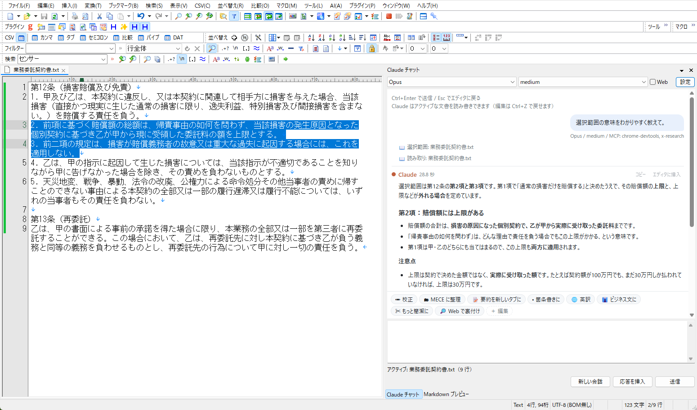
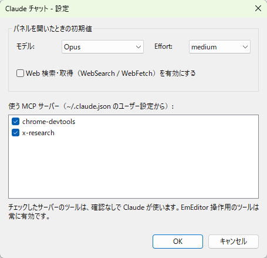

EmEditor の中で、
Claude に文書を読ませて、直させる。
サイドパネルで Claude Code と会話できるプラグインです。
Claude は開いている文書を自分で読み、頼まれれば Ctrl+Z で戻せる形で直接書き換えます。
API キーは不要。Claude Code にログインしていれば、そのまま動きます。

契約書の条項を選んで「選択範囲の意味をわかりやすく教えて」。Claude がエディタから直接読んで答えます。
できること
「ちょっと違うな」を、会話で直していく。軽いメモや単発の文章を、いつもの EmEditor のまま。
文書を自分で読む
貼り付けは不要。「この文書」「選択範囲」と言えば、Claude がツールでエディタから読み取ります。タブを切り替えても、その時点の文書を見ます。
直接書き換える（Ctrl+Z で戻せる）
部分的な置換、全体の整理し直し、新しいタブへの出力。Claude Code の Edit と同じく、置換は対象が 1 か所に特定できるときだけ行います。
ワンタッチのお願い
校正・MECE に整理・要約を新しいタブに・箇条書きに・英訳・ビジネス文に・もっと簡潔に・Web で裏付け。ボタン 1 つで送れます。自分で追加も自由。
API キー不要
中身は claude -p。Claude Code に一度ログインしていれば、そのアカウントで動きます。未ログインならパネルにログインボタンが出ます。
モデルと Effort を切り替え
Opus / Sonnet / Haiku / Fable と、low〜max の Effort を会話の途中でも変更可能。Web 検索・取得もワンクリックでオン。
見やすい会話表示
表・コード・箇条書きなどの Markdown をきれいに表示。回答ごとに「コピー」「エディタに挿入」ボタン付き。
よく頼むことは、テンプレートに
パネルの下に並ぶボタンを押すだけで、決まったお願いを送れます。入力欄に「です・ます調で」などと書いておけば、補足として一緒に送られます。
テンプレートは JSON ファイルで、「＋ 編集」を押すと EmEditor で開きます。保存すればすぐ反映。テンプレートごとにモデルや Web 検索の有無も指定できます。
{
"templates": [
{
"name": "校正",
"icon": "✏",
"prompt": "選択範囲（選択が無ければ文書全体）の誤字脱字・表記ゆれを直し、文書を直接書き換えてください。",
"model": "haiku",
"effort": "low"
}
]
}普段使っている MCP も、そのまま
Claude Code に登録してある MCP サーバー（~/.claude.json）から、チャットで使うものをチェックで選べます。ブラウザ操作や社内ツールなど、手元の道具を文書作業に持ち込めます。
- 選んだサーバーだけを渡し、それ以外は読み込まない
- EmEditor を操作するツールは常に有効
- 設定（API キーを含みうる）はコマンドラインに載せず、一時ファイルで渡して使い終わったら削除

しくみ
EmEditor の中に小さな MCP サーバーを立て、Claude Code にエディタを「ツール」として差し出しています。
EmEditor
├─ Claude チャット（パネル）── 送信 ──▶ claude -p（Claude Code）
│ │ ツール呼び出し
└─ プラグイン内の MCP サーバー ◀──────────┘ （127.0.0.1・トークン認証）
└─ 文書を読む / 選択範囲 / タブ一覧 / 置換 / 挿入 / 全体を書き換え / 新しいタブEmEditor 標準の AI 機能（API キーで外部サービスにつなぐもの）とは別物です。こちらは Claude Code のログインで動き、EmEditor を Claude のツールとして使わせる方向のプラグインです。
インストール
| 必要なもの | EmEditor（64-bit なら x64 版、32-bit なら x86 版の DLL）／ Claude Code（ログイン済み）／ WebView2 Runtime（Windows 11 は標準で入っています） |
|---|---|
| 動作確認した環境 | Windows 11 / EmEditor 23.0.5（64-bit）/ Claude Code 2.1 |
- Releases から zip をダウンロードし、
claude_chat.dllを好きなフォルダに置く（SHA-256 も掲載しています） - EmEditor の「プラグイン > プラグインの設定 > 追加」で DLL を選ぶ
- 「プラグイン > Claude チャット」でパネルを開く。Ctrl+Enter で送信、Esc でエディタに戻ります
ソースからビルドすることもできます（Visual Studio 2022）。手順は README を参照してください。
安全性
ファイル操作・コマンド実行はさせない
Claude Code の組み込みツールは無効。使えるのは EmEditor の文書を扱うツールと、オンにした Web 検索・選んだ MCP だけです。
外から操作されない
MCP サーバーは 127.0.0.1 だけで待ち受け、ポートと認証トークンは毎回ランダム。ブラウザからの要求も拒否します。
表示も安全に
回答の表示はスクリプトを一切動かさない設定（CSP）。回答にリンクがあっても、パネルの中では開かずブラウザに渡します。